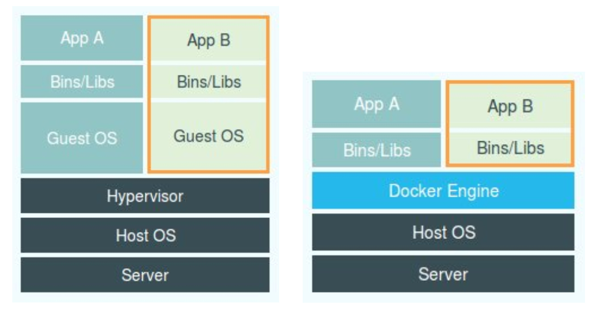

- 00 开篇词 打通“容器技术”的任督二脉.md.html
- 01 预习篇 · 小鲸鱼大事记（一）：初出茅庐.md.html
- 02 预习篇 · 小鲸鱼大事记（二）：崭露头角.md.html
- 03 预习篇 · 小鲸鱼大事记（三）：群雄并起.md.html
- 04 预习篇 · 小鲸鱼大事记（四）：尘埃落定.md.html
- 05 白话容器基础（一）：从进程说开去.md.html
- 06 白话容器基础（二）：隔离与限制.md.html
- 07 白话容器基础（三）：深入理解容器镜像.md.html
- 08 白话容器基础（四）：重新认识Docker容器.md.html
- 09 从容器到容器云：谈谈Kubernetes的本质.md.html
- 10 Kubernetes一键部署利器：kubeadm.md.html
- 11 从0到1：搭建一个完整的Kubernetes集群.md.html
- 12 牛刀小试：我的第一个容器化应用.md.html
- 13 为什么我们需要Pod？.md.html
- 14 深入解析Pod对象（一）：基本概念.md.html
- 15 深入解析Pod对象（二）：使用进阶.md.html
- 16 编排其实很简单：谈谈“控制器”模型.md.html
- 17 经典PaaS的记忆：作业副本与水平扩展.md.html
- 18 深入理解StatefulSet（一）：拓扑状态.md.html
- 19 深入理解StatefulSet（二）：存储状态.md.html
- 20 深入理解StatefulSet（三）：有状态应用实践.md.html
- 21 容器化守护进程的意义：DaemonSet.md.html
- 22 撬动离线业务：Job与CronJob.md.html
- 23 声明式API与Kubernetes编程范式.md.html
- 24 深入解析声明式API（一）：API对象的奥秘.md.html
- 25 深入解析声明式API（二）：编写自定义控制器.md.html
- 26 基于角色的权限控制：RBAC.md.html
- 27 聪明的微创新：Operator工作原理解读.md.html
- 28 PV、PVC、StorageClass，这些到底在说啥？.md.html
- 29 PV、PVC体系是不是多此一举？从本地持久化卷谈起.md.html
- 30 编写自己的存储插件：FlexVolume与CSI.md.html
- 31 容器存储实践：CSI插件编写指南.md.html
- 32 浅谈容器网络.md.html
- 33 深入解析容器跨主机网络.md.html
- 34 Kubernetes网络模型与CNI网络插件.md.html
- 35 解读Kubernetes三层网络方案.md.html
- 36 为什么说Kubernetes只有soft multi-tenancy？.md.html
- 37 找到容器不容易：Service、DNS与服务发现.md.html
- 38 从外界连通Service与Service调试“三板斧”.md.html
- 39 谈谈Service与Ingress.md.html
- 40 Kubernetes的资源模型与资源管理.md.html
- 41 十字路口上的Kubernetes默认调度器.md.html
- 42 Kubernetes默认调度器调度策略解析.md.html
- 43 Kubernetes默认调度器的优先级与抢占机制.md.html
- 44 Kubernetes GPU管理与Device Plugin机制.md.html
- 45 幕后英雄：SIG-Node与CRI.md.html
- 46 解读 CRI 与 容器运行时.md.html
- 47 绝不仅仅是安全：Kata Containers 与 gVisor.md.html
- 48 Prometheus、Metrics Server与Kubernetes监控体系.md.html
- 49 Custom Metrics_ 让Auto Scaling不再“食之无味”.md.html
- 50 让日志无处可逃：容器日志收集与管理.md.html
- 51 谈谈Kubernetes开源社区和未来走向.md.html
- 52 答疑：在问题中解决问题，在思考中产生思考.md.html
- 特别放送 2019 年，容器技术生态会发生些什么？.md.html
- 特别放送 基于 Kubernetes 的云原生应用管理，到底应该怎么做？.md.html
- 结束语 Kubernetes：赢开发者赢天下.md.html
- 捐赠
05 白话容器基础（一）：从进程说开去
你好，我是张磊。今天我和你分享的主题是：白话容器基础之从进程说开去。
在前面的4篇预习文章中，我梳理了“容器”这项技术的来龙去脉，通过这些内容，我希望你能理解如下几个事实：
- 容器技术的兴起源于PaaS技术的普及；
- Docker公司发布的Docker项目具有里程碑式的意义；
- Docker项目通过“容器镜像”，解决了应用打包这个根本性难题。
紧接着，我详细介绍了容器技术圈在过去五年里的“风云变幻”，而通过这部分内容，我希望你能理解这样一个道理：
容器本身没有价值，有价值的是“容器编排”。
也正因为如此，容器技术生态才爆发了一场关于“容器编排”的“战争”。而这次战争，最终以Kubernetes项目和CNCF社区的胜利而告终。所以，这个专栏后面的内容，我会以Docker和Kubernetes项目为核心，为你详细介绍容器技术的各项实践与其中的原理。
不过在此之前，你还需要搞清楚一个更为基础的问题：
容器，到底是怎么一回事儿？
在第一篇预习文章《小鲸鱼大事记（一）：初出茅庐》中，我已经提到过，容器其实是一种沙盒技术。顾名思义，沙盒就是能够像一个集装箱一样，把你的应用“装”起来的技术。这样，应用与应用之间，就因为有了边界而不至于相互干扰；而被装进集装箱的应用，也可以被方便地搬来搬去，这不就是PaaS最理想的状态嘛。
不过，这两个能力说起来简单，但要用技术手段去实现它们，可能大多数人就无从下手了。
所以，我就先来跟你说说这个“边界”的实现手段。
假如，现在你要写一个计算加法的小程序，这个程序需要的输入来自于一个文件，计算完成后的结果则输出到另一个文件中。
由于计算机只认识0和1，所以无论用哪种语言编写这段代码，最后都需要通过某种方式翻译成二进制文件，才能在计算机操作系统中运行起来。
而为了能够让这些代码正常运行，我们往往还要给它提供数据，比如我们这个加法程序所需要的输入文件。这些数据加上代码本身的二进制文件，放在磁盘上，就是我们平常所说的一个“程序”，也叫代码的可执行镜像（executable image）。
然后，我们就可以在计算机上运行这个“程序”了。
首先，操作系统从“程序”中发现输入数据保存在一个文件中，所以这些数据就会被加载到内存中待命。同时，操作系统又读取到了计算加法的指令，这时，它就需要指示CPU完成加法操作。而CPU与内存协作进行加法计算，又会使用寄存器存放数值、内存堆栈保存执行的命令和变量。同时，计算机里还有被打开的文件，以及各种各样的I/O设备在不断地调用中修改自己的状态。
就这样，一旦“程序”被执行起来，它就从磁盘上的二进制文件，变成了计算机内存中的数据、寄存器里的值、堆栈中的指令、被打开的文件，以及各种设备的状态信息的一个集合。像这样一个程序运行起来后的计算机执行环境的总和，就是我们今天的主角：进程。
所以，对于进程来说，它的静态表现就是程序，平常都安安静静地待在磁盘上；而一旦运行起来，它就变成了计算机里的数据和状态的总和，这就是它的动态表现。
而容器技术的核心功能，就是通过约束和修改进程的动态表现，从而为其创造出一个“边界”。
对于Docker等大多数Linux容器来说，Cgroups技术是用来制造约束的主要手段，而Namespace技术则是用来修改进程视图的主要方法。
你可能会觉得Cgroups和Namespace这两个概念很抽象，别担心，接下来我们一起动手实践一下，你就很容易理解这两项技术了。
假设你已经有了一个Linux操作系统上的Docker项目在运行，比如我的环境是Ubuntu 16.04和Docker CE 18.05。
接下来，让我们首先创建一个容器来试试。
$ docker run -it busybox /bin/sh
/ #
这个命令是Docker项目最重要的一个操作，即大名鼎鼎的docker run。
而-it参数告诉了Docker项目在启动容器后，需要给我们分配一个文本输入/输出环境，也就是TTY，跟容器的标准输入相关联，这样我们就可以和这个Docker容器进行交互了。而/bin/sh就是我们要在Docker容器里运行的程序。
所以，上面这条指令翻译成人类的语言就是：请帮我启动一个容器，在容器里执行/bin/sh，并且给我分配一个命令行终端跟这个容器交互。
这样，我的Ubuntu 16.04机器就变成了一个宿主机，而一个运行着/bin/sh的容器，就跑在了这个宿主机里面。
上面的例子和原理，如果你已经玩过Docker，一定不会感到陌生。此时，如果我们在容器里执行一下ps指令，就会发现一些更有趣的事情：
/ # ps
PID USER TIME COMMAND
1 root 0:00 /bin/sh
10 root 0:00 ps
可以看到，我们在Docker里最开始执行的/bin/sh，就是这个容器内部的第1号进程（PID=1），而这个容器里一共只有两个进程在运行。这就意味着，前面执行的/bin/sh，以及我们刚刚执行的ps，已经被Docker隔离在了一个跟宿主机完全不同的世界当中。
这究竟是怎么做到的呢？
本来，每当我们在宿主机上运行了一个/bin/sh程序，操作系统都会给它分配一个进程编号，比如PID=100。这个编号是进程的唯一标识，就像员工的工牌一样。所以PID=100，可以粗略地理解为这个/bin/sh是我们公司里的第100号员工，而第1号员工就自然是比尔 · 盖茨这样统领全局的人物。
而现在，我们要通过Docker把这个/bin/sh程序运行在一个容器当中。这时候，Docker就会在这个第100号员工入职时给他施一个“障眼法”，让他永远看不到前面的其他99个员工，更看不到比尔 · 盖茨。这样，他就会错误地以为自己就是公司里的第1号员工。
这种机制，其实就是对被隔离应用的进程空间做了手脚，使得这些进程只能看到重新计算过的进程编号，比如PID=1。可实际上，他们在宿主机的操作系统里，还是原来的第100号进程。
这种技术，就是Linux里面的Namespace机制。而Namespace的使用方式也非常有意思：它其实只是Linux创建新进程的一个可选参数。我们知道，在Linux系统中创建进程的系统调用是clone()，比如：
int pid = clone(main_function, stack_size, SIGCHLD, NULL);
这个系统调用就会为我们创建一个新的进程，并且返回它的进程号pid。
而当我们用clone()系统调用创建一个新进程时，就可以在参数中指定CLONE_NEWPID参数，比如：
int pid = clone(main_function, stack_size, CLONE_NEWPID | SIGCHLD, NULL);
这时，新创建的这个进程将会“看到”一个全新的进程空间，在这个进程空间里，它的PID是1。之所以说“看到”，是因为这只是一个“障眼法”，在宿主机真实的进程空间里，这个进程的PID还是真实的数值，比如100。
当然，我们还可以多次执行上面的clone()调用，这样就会创建多个PID Namespace，而每个Namespace里的应用进程，都会认为自己是当前容器里的第1号进程，它们既看不到宿主机里真正的进程空间，也看不到其他PID Namespace里的具体情况。
而除了我们刚刚用到的PID Namespace，Linux操作系统还提供了Mount、UTS、IPC、Network和User这些Namespace，用来对各种不同的进程上下文进行“障眼法”操作。
比如，Mount Namespace，用于让被隔离进程只看到当前Namespace里的挂载点信息；Network Namespace，用于让被隔离进程看到当前Namespace里的网络设备和配置。
这，就是Linux容器最基本的实现原理了。
所以，Docker容器这个听起来玄而又玄的概念，实际上是在创建容器进程时，指定了这个进程所需要启用的一组Namespace参数。这样，容器就只能“看”到当前Namespace所限定的资源、文件、设备、状态，或者配置。而对于宿主机以及其他不相关的程序，它就完全看不到了。
所以说，容器，其实是一种特殊的进程而已。
总结
谈到为“进程划分一个独立空间”的思想，相信你一定会联想到虚拟机。而且，你应该还看过一张虚拟机和容器的对比图。

这幅图的左边，画出了虚拟机的工作原理。其中，名为Hypervisor的软件是虚拟机最主要的部分。它通过硬件虚拟化功能，模拟出了运行一个操作系统需要的各种硬件，比如CPU、内存、I/O设备等等。然后，它在这些虚拟的硬件上安装了一个新的操作系统，即Guest OS。
这样，用户的应用进程就可以运行在这个虚拟的机器中，它能看到的自然也只有Guest OS的文件和目录，以及这个机器里的虚拟设备。这就是为什么虚拟机也能起到将不同的应用进程相互隔离的作用。
而这幅图的右边，则用一个名为Docker Engine的软件替换了Hypervisor。这也是为什么，很多人会把Docker项目称为“轻量级”虚拟化技术的原因，实际上就是把虚拟机的概念套在了容器上。
可是这样的说法，却并不严谨。
在理解了Namespace的工作方式之后，你就会明白，跟真实存在的虚拟机不同，在使用Docker的时候，并没有一个真正的“Docker容器”运行在宿主机里面。Docker项目帮助用户启动的，还是原来的应用进程，只不过在创建这些进程时，Docker为它们加上了各种各样的Namespace参数。
这时，这些进程就会觉得自己是各自PID Namespace里的第1号进程，只能看到各自Mount Namespace里挂载的目录和文件，只能访问到各自Network Namespace里的网络设备，就仿佛运行在一个个“容器”里面，与世隔绝。
不过，相信你此刻已经会心一笑：这些不过都是“障眼法”罢了。
思考题
鉴于我对容器本质的讲解，你觉得上面这张容器和虚拟机对比图右侧关于容器的部分，怎么画才更精确？
你是否知道最新的Docker项目默认会为容器启用哪些Namespace吗？
感谢你的收听，欢迎你给我留言，也欢迎分享给更多的朋友一起阅读。
© 2019 - 2023 Liangliang Lee. Powered by gin and hexo-theme-book.